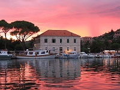

Jelsa je smeštena na severnoj i južnoj obali središnjeg dela ostrva Hvara. Prostire se na 121,2 km2. Područje opštine kao i celog ostrva ima bogato razvedenu obalu s pripadajućim ostrvima, mnoštvom uvala i ostrva. Jelsu omeđuju dva najviša ostrvna vrha, na zapadu Sv. Nikola, a na istoku Hum. Ima blagu klimu, s toplim zimama i ugodnim letima, a celo područje opštine obiluje raskošnim mediteranskim rastinjem.
Svetica zaštitnica grada Jelse je Velika Gospa. Od 15. srpnja do 15. kolovoza u Jelsi se održava kulturna manifestacija Dani Antuna Dobronića. U zadnjem vikendu kolovoza održava se Fešta vina u Jelsi. Jelsa je bila mjestom nastanka lika iz stripa Lavandermana.